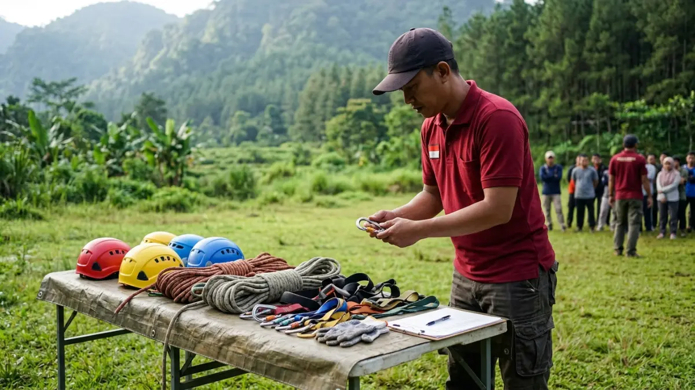

Cara memilih vendor outbound Pacet yang tepat adalah menilai pengalaman, standar keselamatan, kualitas fasilitator, kejelasan penawaran, dan kecocokan program dengan tujuan kelompok Anda.
- Pilih vendor berdasarkan kecocokan tujuan, bukan hanya harga atau popularitas.
- Standar keselamatan dan kompetensi fasilitator adalah kriteria yang tidak boleh dikompromikan.
- Verifikasi portofolio, testimoni, dan legalitas sebelum menyepakati kerja sama.
- Ajukan pertanyaan terstruktur dan bandingkan jawaban beberapa vendor.
- Tuangkan semua kesepakatan dalam dokumen tertulis.
DAFTAR ISI
- 1. Apa Kriteria Utama Memilih Vendor Outbound di Pacet?
- 2. Bagaimana Cara Menilai Standar Keselamatan Vendor?
- 3. Apa yang Perlu Dicek dari Fasilitator dan Tim Lapangan?
- 4. Pertanyaan Apa yang Sebaiknya Diajukan kepada Vendor?
- 5. Bagaimana Cara Memverifikasi Reputasi dan Portofolio Vendor?
- 6. Apa Tanda Peringatan dari Vendor yang Kurang Profesional?
- 7. Bagaimana Menyesuaikan Pilihan Vendor dengan Jenis Kelompok?
- 8. Bagaimana Menyusun Kesepakatan Tertulis dengan Vendor?
- 9. Kesimpulan
- 10. FAQ
1. Apa Kriteria Utama Memilih Vendor Outbound di Pacet?
Kriteria utama mencakup pengalaman vendor, standar keselamatan, kompetensi fasilitator, kejelasan penawaran, kesesuaian program dengan tujuan, dan reputasi yang dapat diverifikasi.
Pengalaman menunjukkan apakah vendor pernah menangani kelompok sejenis, misalnya karyawan kantor, siswa, atau komunitas.
Standar keselamatan menentukan seberapa siap vendor menghadapi risiko di area pegunungan. Kompetensi fasilitator memengaruhi kualitas pengalaman belajar peserta.
Kejelasan penawaran terlihat dari rincian program, fasilitas, jadwal, dan harga. Kesesuaian program berarti aktivitas yang ditawarkan benar-benar mendukung tujuan, bukan sekadar menarik. Reputasi dapat dinilai dari portofolio, testimoni, dan ulasan publik.
Beri bobot pada setiap kriteria sesuai prioritas Anda. Untuk kelompok pelajar, misalnya, keselamatan dan pengawasan dapat diberi bobot paling tinggi. Cara ini membantu keputusan lebih objektif ketika beberapa vendor tampak serupa.
2. Bagaimana Cara Menilai Standar Keselamatan Vendor?
Standar keselamatan dinilai dari kondisi peralatan, prosedur darurat, rasio fasilitator terhadap peserta, kesiapan pertolongan pertama, serta kejelasan asuransi dan briefing sebelum aktivitas berisiko.
Informasi ini bersifat umum dan bukan pengganti penilaian profesional. Untuk aktivitas ketinggian, Anda dapat meminta vendor menjelaskan bagaimana peralatan diperiksa, siapa yang mengawasi, dan apa yang dilakukan bila terjadi cedera atau cuaca buruk.

Fasilitator outbound memeriksa kelayakan perlengkapan keselamatan seperti helm, tali carmantel, harness, dan carabiner demi menjamin keamanan peserta kegiatan. (Ilustrasi)Perhatikan apakah vendor melakukan briefing keselamatan sebelum setiap aktivitas, menyediakan kotak pertolongan pertama, dan memiliki rencana evakuasi sederhana.
Tanyakan juga apakah ada tenaga yang memahami pertolongan pertama dan bagaimana vendor berkoordinasi dengan fasilitas kesehatan terdekat.
Rasio fasilitator terhadap peserta penting karena pengawasan yang cukup mengurangi risiko. Bila ragu, mintalah vendor menunjukkan prosedur operasional tertulis dan, jika perlu, konsultasikan dengan pihak yang berkompeten dalam keselamatan kegiatan luar ruang.
3. Apa yang Perlu Dicek dari Fasilitator dan Tim Lapangan?
Fasilitator yang baik memahami dinamika kelompok, mampu memberi instruksi jelas, tanggap terhadap risiko, dan dapat memandu sesi refleksi yang menghubungkan permainan dengan tujuan kerja.
Tanyakan latar belakang dan pengalaman fasilitator, termasuk jenis kelompok yang pernah ditangani. Minta contoh bagaimana mereka memandu sesi refleksi, karena bagian ini menentukan apakah peserta memperoleh pelajaran atau hanya bersenang-senang.
Perhatikan juga cara fasilitator berkomunikasi. Instruksi yang jelas, sikap ramah, dan kemampuan menjaga suasana inklusif sangat penting, terutama bagi peserta dengan tingkat kebugaran berbeda. Tim lapangan yang rapi dan terkoordinasi biasanya mencerminkan manajemen vendor yang baik.
Jika memungkinkan, adakan pertemuan singkat dengan fasilitator utama sebelum hari pelaksanaan. Pertemuan ini membantu menyamakan harapan dan memastikan program sesuai kondisi peserta.
4. Pertanyaan Apa yang Sebaiknya Diajukan kepada Vendor?
Ajukan pertanyaan tentang pengalaman menangani kelompok serupa, rincian program, fasilitas, rasio fasilitator, rencana cuaca buruk, asuransi, ketentuan pembayaran, dan kebijakan pembatalan.
Berikut daftar pertanyaan praktis yang dapat digunakan:
- Kelompok seperti apa yang pernah Anda tangani dan bagaimana hasilnya?
- Apa saja isi program, durasi tiap sesi, dan peralatan yang digunakan?
- Berapa jumlah fasilitator untuk kelompok sebesar ini?
- Apa prosedur bila terjadi cedera atau cuaca buruk?
- Apakah asuransi peserta termasuk dalam harga?
- Apa saja yang termasuk dan tidak termasuk dalam penawaran?
- Bagaimana ketentuan pembayaran, perubahan jadwal, dan pembatalan?
Catat jawaban setiap vendor dengan format yang sama agar mudah dibandingkan. Vendor yang menjawab dengan jelas dan terbuka biasanya lebih dapat dipercaya dibanding vendor yang menghindari detail.
5. Bagaimana Cara Memverifikasi Reputasi dan Portofolio Vendor?
Reputasi diverifikasi melalui portofolio kegiatan, testimoni yang bisa dihubungi, ulasan publik, legalitas usaha, dan survei langsung ke lokasi sebelum menandatangani kesepakatan.
Portofolio yang baik menampilkan kegiatan nyata beserta jenis klien dan program yang dijalankan. Mintalah kontak klien sebelumnya bila memungkinkan, lalu tanyakan pengalaman mereka tentang ketepatan jadwal, keselamatan, dan kualitas fasilitator.
Periksa ulasan di platform publik, tetapi bacalah secara kritis karena ulasan dapat tidak lengkap atau tidak merata. Pastikan pula identitas usaha jelas, misalnya nama perusahaan, alamat, dan kontak resmi.
Survei lokasi adalah langkah penting. Dengan melihat langsung area kegiatan di Pacet, Anda dapat menilai kondisi lapangan, fasilitas, akses, dan ketersediaan area cadangan bila hujan. Survei juga memberi kesempatan bertemu tim vendor.
6. Apa Tanda Peringatan dari Vendor yang Kurang Profesional?
Tanda peringatan meliputi penawaran tidak rinci, harga yang tidak wajar, enggan menunjukkan portofolio, tidak membahas keselamatan, dan menekan klien untuk segera membayar penuh.
Penawaran yang hanya berisi satu angka tanpa rincian membuat klien sulit menilai isi paket. Harga yang jauh lebih murah dari penawaran lain patut dicermati, karena penghematan dapat berasal dari fasilitator yang lebih sedikit atau peralatan yang kurang layak.
Vendor yang tidak mau menunjukkan bukti kegiatan sebelumnya, menghindari pertanyaan tentang keselamatan, atau menolak membuat kesepakatan tertulis perlu diwaspadai.
Tekanan untuk membayar penuh di awal tanpa jadwal dan dokumen yang jelas juga merupakan tanda yang kurang baik.
Tanda-tanda ini tidak selalu berarti vendor curang, tetapi cukup kuat sebagai alasan untuk bertanya lebih jauh atau mempertimbangkan vendor lain.
BACA JUGA
7. Bagaimana Menyesuaikan Pilihan Vendor dengan Jenis Kelompok?
Pilihan vendor disesuaikan dengan jenis kelompok karena perusahaan, sekolah, komunitas, dan keluarga memiliki tujuan, usia peserta, tingkat kebugaran, dan kebutuhan pengawasan yang berbeda.
Untuk perusahaan, cari vendor yang mampu mengaitkan aktivitas dengan budaya kerja, komunikasi antardivisi, dan kepemimpinan.
Untuk sekolah, prioritaskan vendor yang berpengalaman menangani anak dan remaja, dengan pengawasan ketat dan aktivitas sesuai usia.
Untuk komunitas, fleksibilitas program dan suasana santai sering lebih penting. Untuk acara keluarga, pilih permainan inklusif yang dapat diikuti berbagai usia, termasuk peserta yang kurang aktif secara fisik.
Informasikan kondisi khusus peserta kepada vendor, misalnya peserta dengan keterbatasan fisik atau riwayat kesehatan tertentu, agar program dapat disesuaikan. Gambaran umum layanan dan manfaatnya dapat dibaca pada panduan utama sewa vendor outbound Pacet Mojokerto.
8. Bagaimana Menyusun Kesepakatan Tertulis dengan Vendor?
Kesepakatan tertulis sebaiknya memuat ruang lingkup program, jadwal, jumlah peserta, harga, termin pembayaran, tanggung jawab keselamatan, kebijakan cuaca, dan ketentuan pembatalan atau perubahan jadwal.
Dokumen ini melindungi kedua belah pihak. Ruang lingkup program harus rinci, misalnya daftar aktivitas, fasilitas, konsumsi, dan dokumentasi. Cantumkan pula jumlah peserta minimum dan batas perubahan jumlah peserta.
Termin pembayaran sebaiknya jelas, misalnya uang muka dan pelunasan pada tanggal tertentu. Tanggung jawab keselamatan, kebijakan asuransi, dan prosedur darurat perlu disebutkan agar tidak ada kebingungan bila terjadi insiden.
Atur juga apa yang terjadi bila cuaca buruk atau jadwal berubah. Untuk aspek hukum yang kompleks, konsultasikan dengan pihak yang kompeten. Perbandingan biaya antarvendor dibahas dalam artikel harga paket outbound Pacet Mojokerto.
9. Kesimpulan
Cara memilih vendor outbound Pacet yang baik adalah menetapkan tujuan, menilai keselamatan dan kompetensi fasilitator, memverifikasi reputasi, lalu membandingkan penawaran dengan parameter yang sama.
Hindari keputusan berdasarkan harga semata, perhatikan tanda peringatan, dan tuangkan semua kesepakatan dalam dokumen tertulis. Informasi ini bersifat umum dan perlu disesuaikan dengan kebutuhan serta kondisi kelompok Anda.